PromptKit
A structured prompt system for accurate team workflows on Web and faster individual creation on mobile.
- Role
- Research, product strategy and UX/UI design
- Focus
- Creative control, traceability and reusable prompts
- Outcome
- One reviewable path from visual intent to production handoff
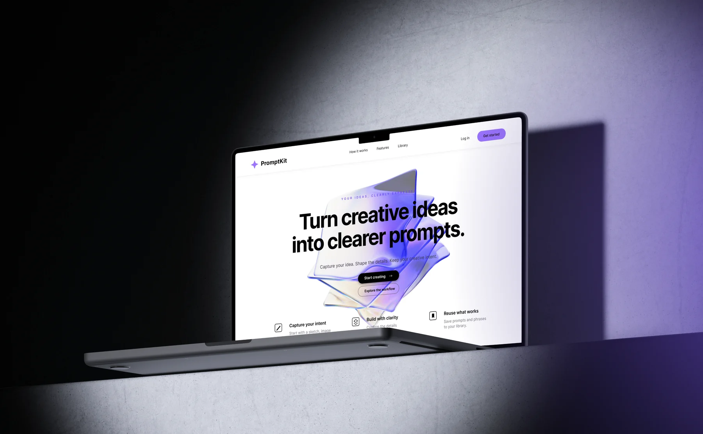
Brief interpretation & scoping
Interview summary
DNEG client exchange
Creative risk assessment
Journey map after using AI
Key insights
Problem definition
Six concept directions
Concept selection & synthesis
One system, two workspaces
Prompt frame development
Prompt frame verification
Lo-fi prototype evolution
Three key changes
Information Architecture
A shared structure connects source analysis, prompt framing, video direction and production handoff.
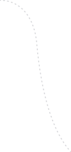
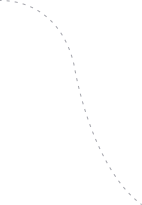
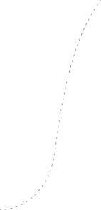
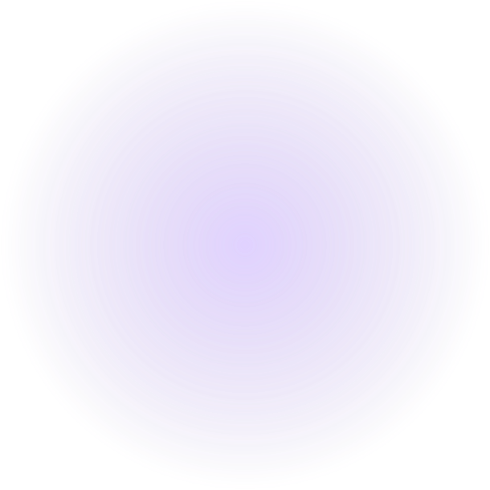
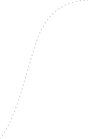
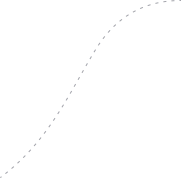
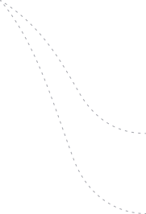
PROMPTKITTeam prompt workspace
01 Analyse Frame
Image + intent + still
Upload sourceSketch · references · preview
Task goalNarrative focus · success criteria
AI frame analysisDetection · confidence · source
Artist reviewConfirm · edit · constrain
Automated Prompt Frame
12 shared visual components
ContentSubject · Scene · Action / State · Narrative Focus
DesignShape · Character · Object · Scene Design
PresentationStyle · Camera · Colour · Lighting & Atmosphere
Model AdapterModel syntax · generation settings
02 Video Parameters
Motion + camera + timing
Inherit frameFinal still · confirmed decisions
Motion componentsSubject · environment · intensity
Camera dynamicsMovement · direction · speed
Timing & video promptDuration · rhythm · recommendations
03 · Generate & Handoff
Preview + review + delivery
Generate videoRender · preview · regenerate
Unified previewSource · still · video · prompts
Component reviewConfirmed · edited · AI
Production handoffOwner · permissions · export
Minimum Prompt is a Quick Start. The full Frame remains the source of truth for team review, versions and handoff.
WEB WORKSPACE · v04
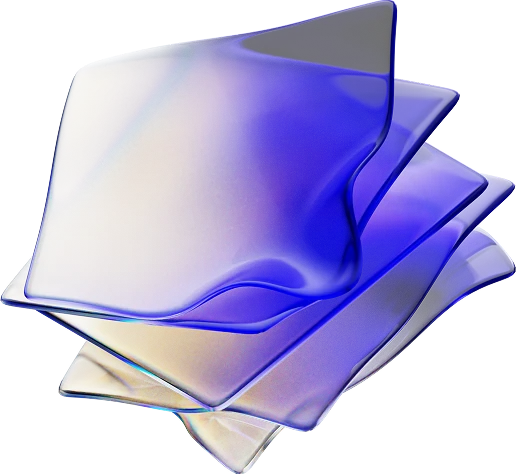
Final Web Output
Image Creation
Analyse a sketch, confirm visual intent and turn approved choices into a reusable, model-ready image prompt.
Step 1: Analyse Frame
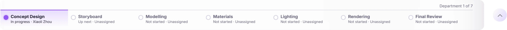
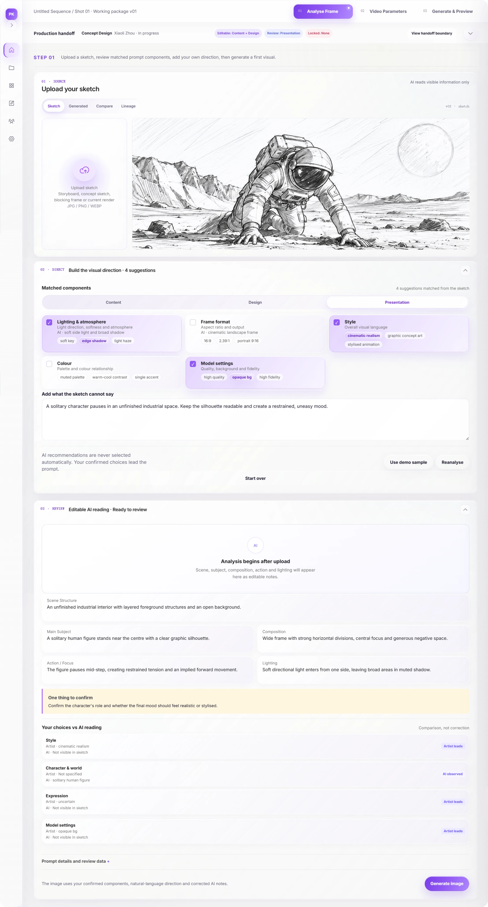
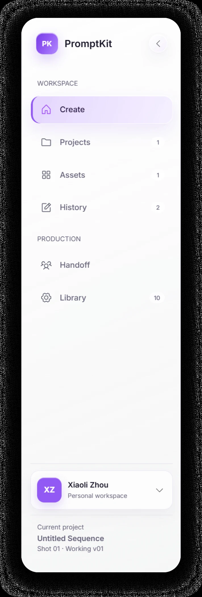
FOCUS & NAVIGATION
Collapse the sidebar to give the canvas more room. Projects, assets and history remain one click away; account and project context stay together.
PRODUCTION HANDOFF
Keep stage, ownership and edit permissions in one compact strip. Expand the workflow only when needed, preserving room for creative work.
FROM SKETCH ANALYSIS TO GUIDED SELECTION
After an artist uploads a sketch, AI analyses its visual features and suggests potentially relevant prompt components across Content, Design and Presentation. These suggestions appear in a guided panel for the artist to review and select. A natural-language input below lets them add context, refine the direction and express intentions that the sketch alone cannot communicate.
INTENT VS. OBSERVATION
Editable AI notes sit alongside the artist’s choices. Differences and uncertain details remain explicit, so an observation is not mistaken for an approved creative decision.
Step 2: Quick changes and Final prompt
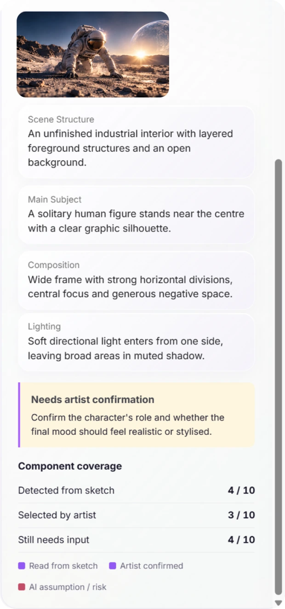
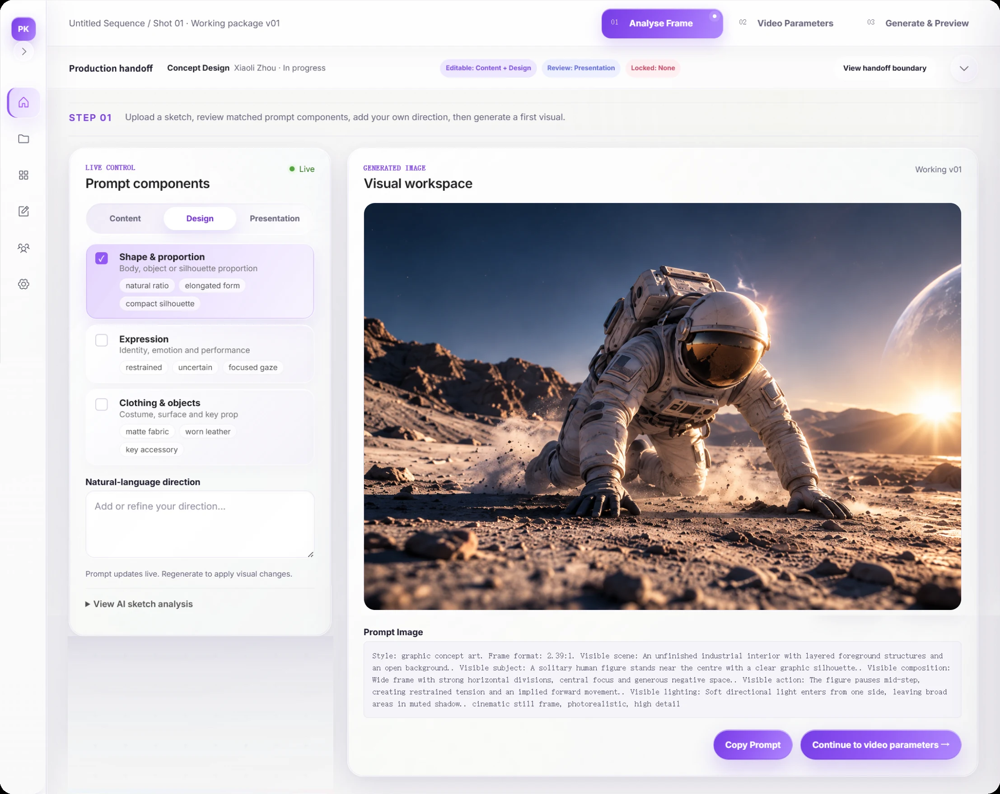
REFINE WITHOUT STARTING OVER
Keep components beside the generated still. Refine individual visual choices, then regenerate to see their effect without rebuilding the prompt.
TRACEABLE READING
Open the sketch analysis when needed. Coverage counts separate detected details, artist confirmations and missing input, keeping assumptions visible during refinement.
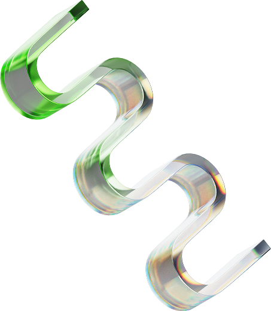
Video Direction
Turn the approved visual frame into clear movement, camera and timing decisions.
Step 1: Quick capture of video content
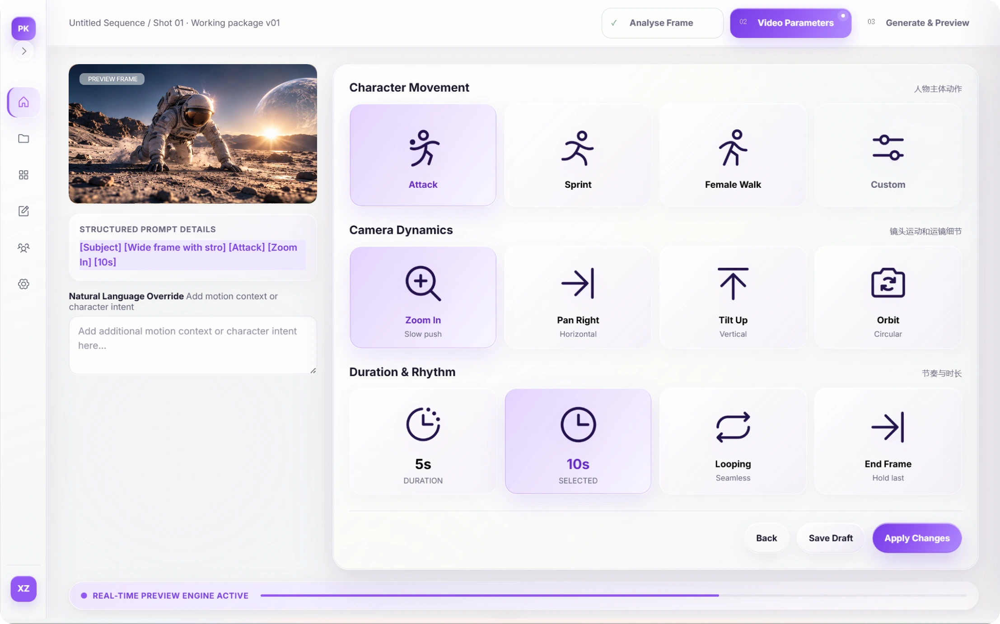
KEEP THE FRAME IN VIEW
The reference frame and structured prompt remain beside the controls. A natural-language override captures nuances that preset cards cannot express.
DIRECT THE MOTION
Movement, camera and rhythm are separated into visual choices. Consistent icons and selected states make shot settings easier to scan and compare.
Step 2: Quickly switching and changing content
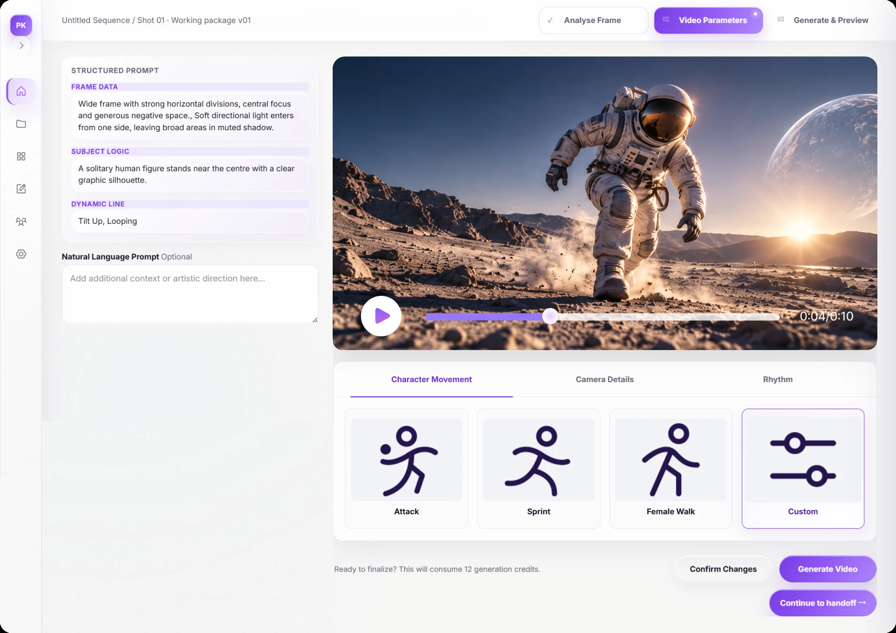
PREVIEW IN CONTEXT
The video preview stays beside frame data, subject logic and motion instructions. Review the result against its intended direction before committing to another generation.
Review & Production Handoff
Confirm every creative decision, surface AI assumptions and deliver one reviewable package.
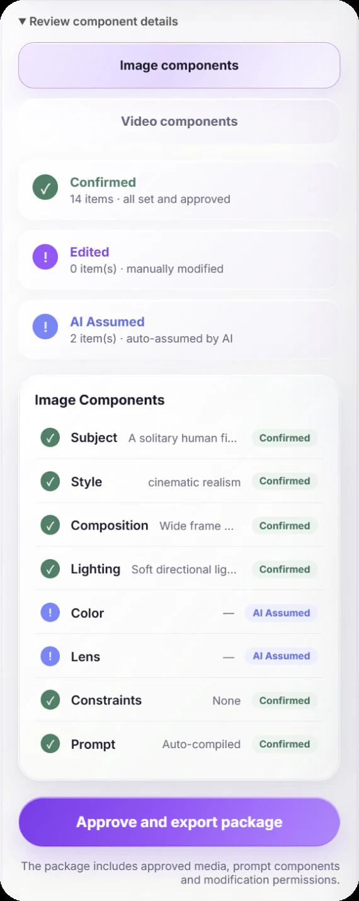
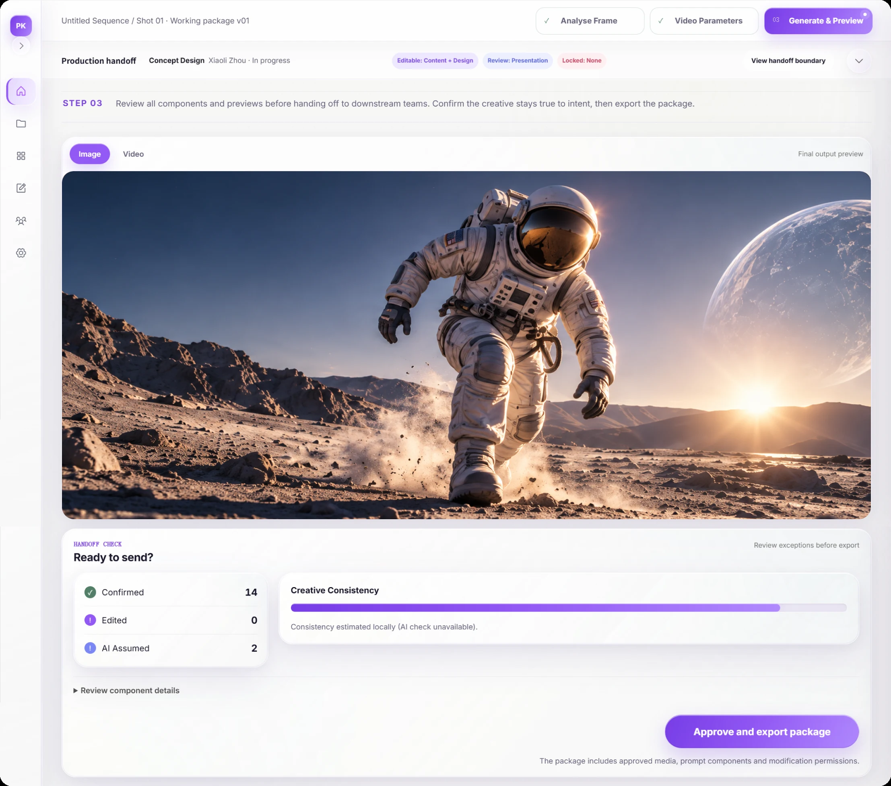
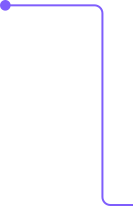
REVIEW THE DECISIONS
Confirmed, Edited and AI Assumed states expose what still needs checking before handoff.
APPROVE & HAND OFF
Export brings approved media, prompt components and modification permissions together. Downstream teams receive the creative context, not just an isolated image or video.
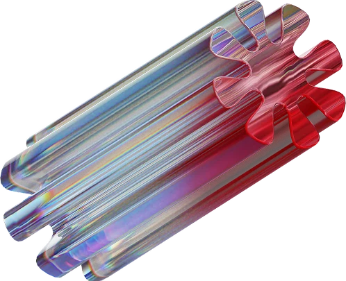
Final App Output
A mobile flow for individual artists: capture an idea, confirm key visual choices, compile a model-ready prompt, and reuse saved phrases and presets.
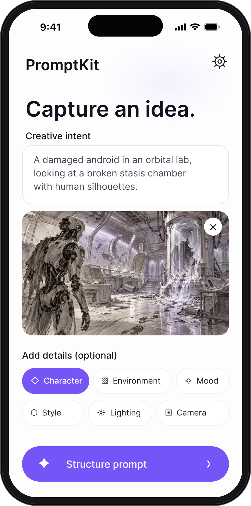
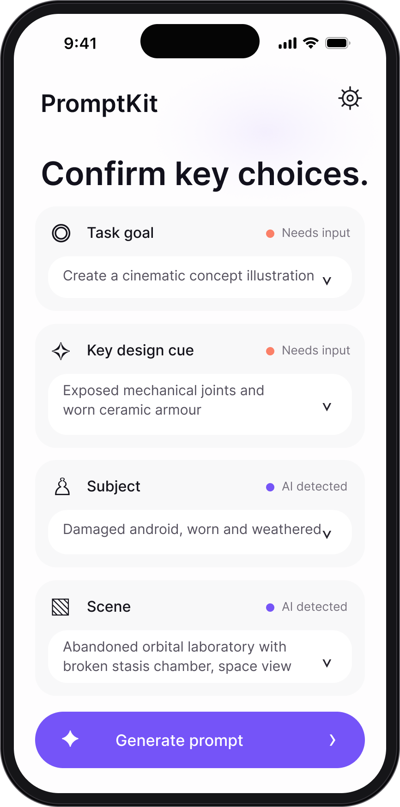
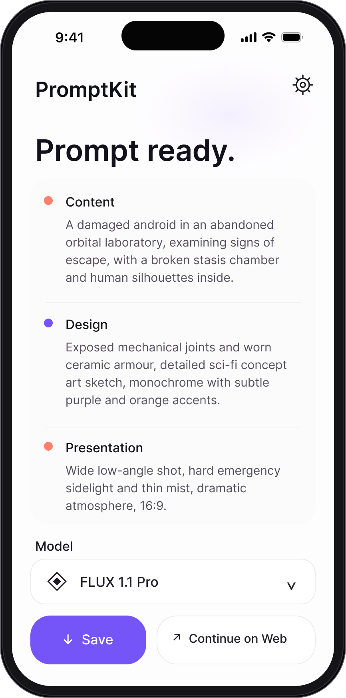
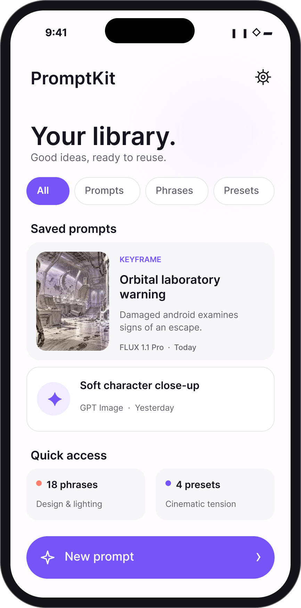
01 CAPTURE
Start with an idea and a reference. Optional detail chips help capture intent without a long form.
02 CONFIRM
Separate detected details from missing decisions. Review key choices before compiling the prompt.
03 COMPILE
Organise Content, Design and Presentation for a chosen model. Save the prompt or continue on Web.
04 REUSE
Keep prompts, phrases and presets in one library. Reuse proven choices instead of starting again.